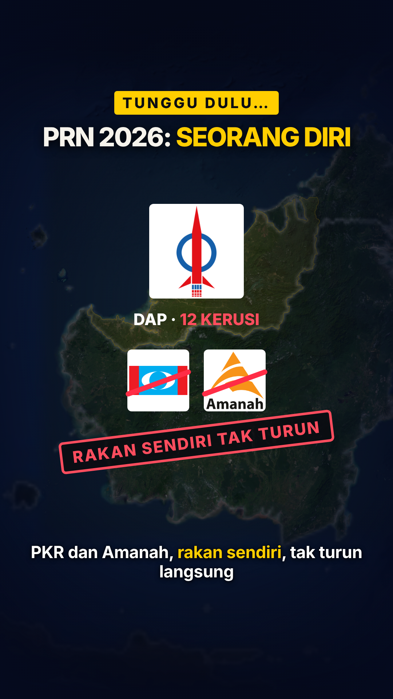
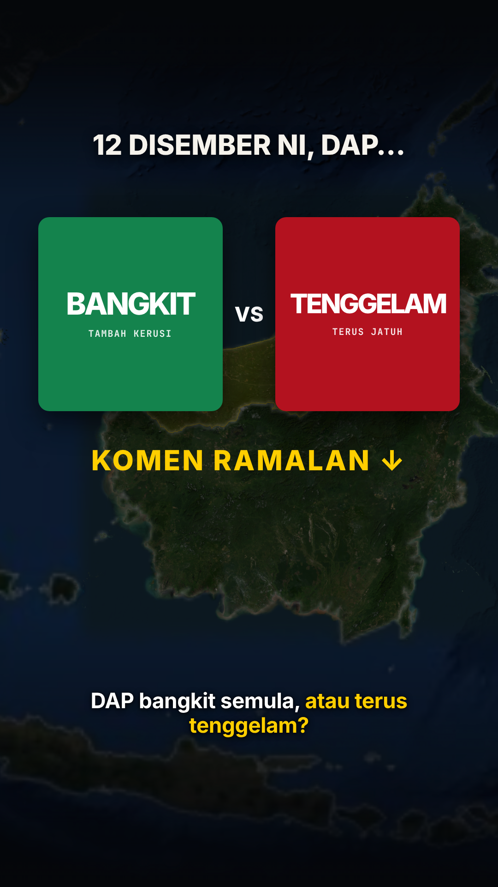

01 · 0:00
Hook + open loop
"Tahun 2011, DAP menang 12 kerusi di Sarawak. Rekod terbaik DAP di negeri tu. Sepuluh tahun kemudian, tinggal dua je! Apa jadi?"
Carta bar 12 → 2: bar 2011 naik, bar 2021 runtuh. Logo DAP, cop merah APA JADI?

02 · 0:07
2011: 12 kerusi
"(sambungan hook)"
Peta Sarawak imej tajam, pin Kuching, Sibu, Bintulu, Miri. Kad 12 titik merah, rekod terbaik.

03 · 0:10
2016: tinggal 7
"2016, DAP hilang lima kerusi, tinggal tujuh."
5 titik padam satu-satu jadi ✗, kiraan 12 → 7.

04 · 0:14
2021: tinggal 2
"2021, hilang lima lagi. Cuma Padungan dan Pending yang bertahan. SUPP, parti dalam GPS, rampas balik kerusi-kerusi tu."
7 → 2. Pin Kuching DAP BERTAHAN; Sibu, Bintulu, Miri bertukar → SUPP (kuning).

05 · 0:22
12 / 16
"Malah GPS menang 12 daripada 16 kerusi majoriti Cina, prestasi terbaik dalam 15 tahun."
Kad emas 12 / 16 dengan logo GPS, 16 titik menyala, cop TERBAIK DALAM 15 TAHUN.

06 · 0:29
Kenapa?
"Kenapa? Penganalisis kata, pengundi kecewa dengan rekod 22 bulan PH di Putrajaya, dan sentimen Utamakan Sarawak makin kuat."
KENAPA? + dua kad sebab muncul satu-satu (dilabel kata penganalisis, bukan fakta mutlak).

07 · 0:39
Re-hook: seorang diri
"Tapi tunggu dulu! PRN kali ni, DAP bertanding seorang diri. PKR dan Amanah, rakan sendiri, tak turun langsung."
Flash, muzik berhenti. Logo DAP besar di tengah, logo PKR & Amanah dipangkah, cop RAKAN SENDIRI TAK TURUN.

08 · 0:47
Ramalan
"Jadi, 12 Disember ni, DAP bangkit semula, atau terus tenggelam? Komen ramalan kau kat bawah!"
Dua kad BANGKIT vs TENGGELAM + KOMEN RAMALAN ↓.